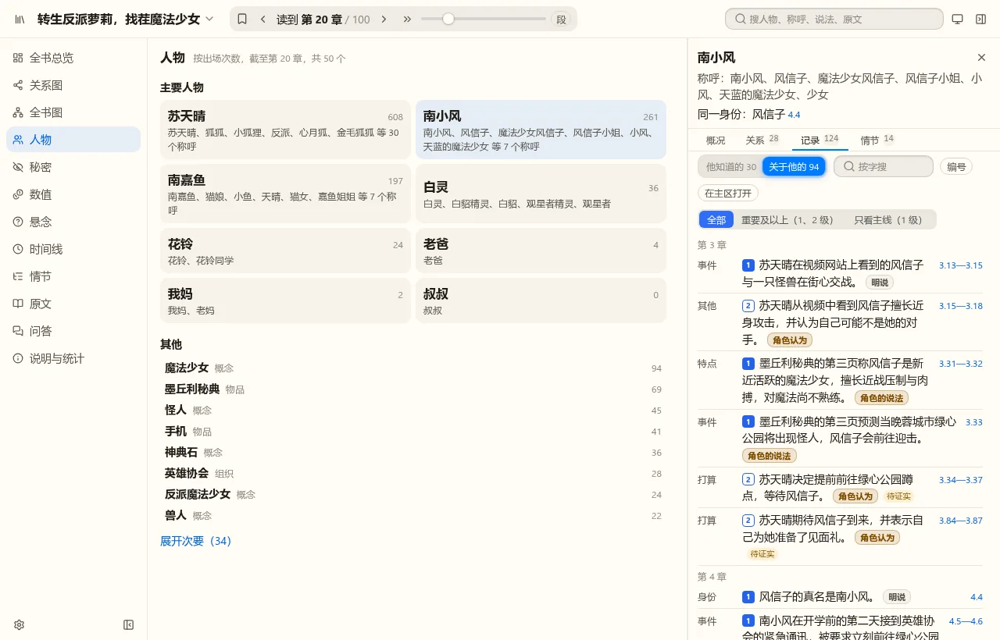
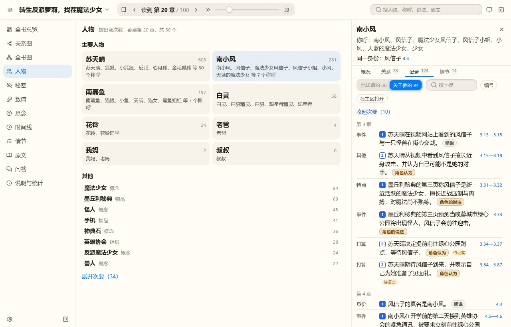
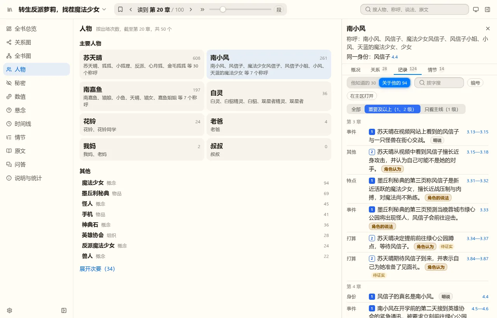
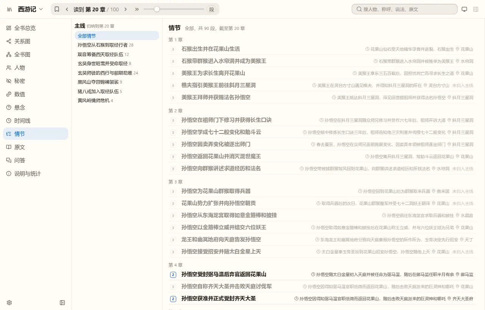
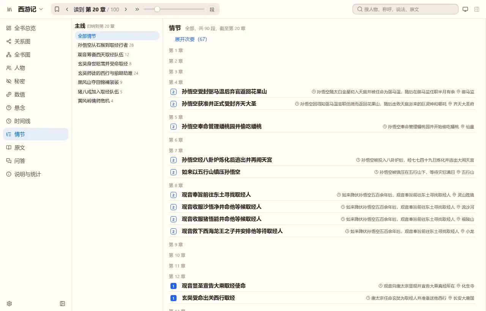
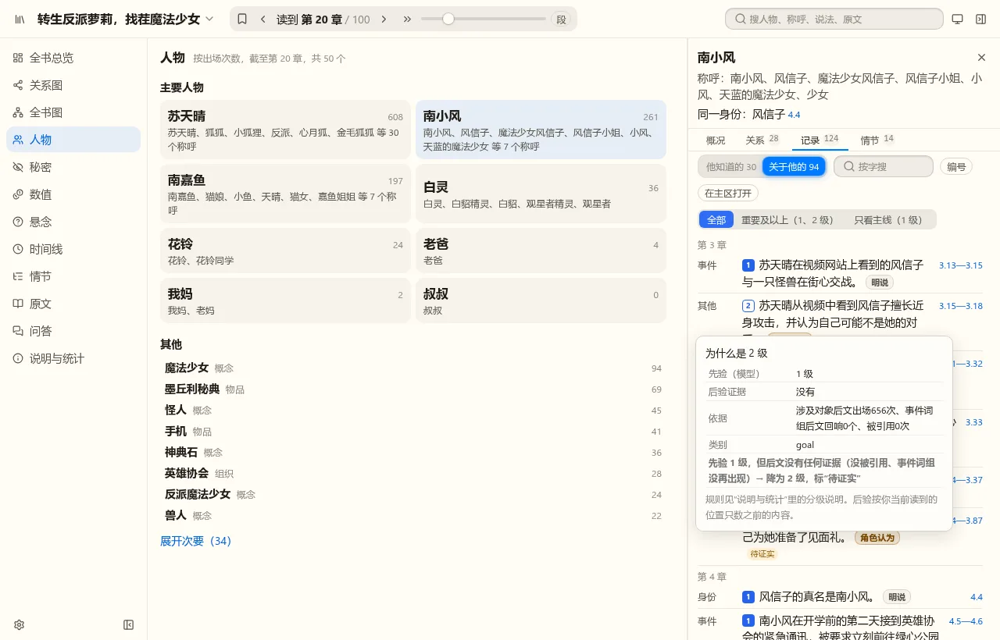

下面都是真实的查看器页面（样例书《转生反派萝莉，找茬魔法少女》到第 20 章、西游记 100 回图到第 20 回），在页面上叠了等级色块与折叠条做成的静态稿，不是已实现的功能。说法的等级用了 t28 里模型两遍标注的第一遍作为“先验”、程序算的后验证据合并得出，所以带“待证实”“伏笔候选”标签；西游记是没有先验的旧书，只有程序等级。
人物页已经有一个折叠：主要人物之后的“其他”按出场数排，最后一行蓝字“展开次要（34）”。分级的折叠可以沿用这个说法和样子，不另造一套。
色块含义：1 主线必需（实心）、2 有用（空心）、3 琐碎（灰框）。小标签：待证实＝模型当时标 1 级，但后文没有再提；伏笔候选＝模型当时标 3 级，但后文反复回响。
以人物卡“关于他的”说法列表为例（南小风，到第 20 章）。三种候选，色块和小标签都有，差别只在 3 级怎么处理。

不丢任何东西，但列表一样长；淡显只能降低醒目程度。
折叠时

展开后 3 级淡显，“收起次要”
我的推荐：B。和人物页一致，默认看到的是主线与有用的记录，想看细节点一下。

能一直收到“只看主线”，但控件多一个，且和“他知道的 / 关于他的”“知道 认为 怀疑…”几排筛选挤在一起。
说法（人物卡的记录、关系说明）和对象列表适合折叠。情节要小心：下图是西游记情节页，用程序等级折叠 3 级后，第 1 到 3 回（石猴出生、拜师学艺、龙宫取兵器）全被折叠，第 4 到 8 回只剩 2 级。程序不知道“开头的故事”本身重要。情节没有先验时折叠会误伤主线，而情节页每章本来只有几条，已经很紧凑。

情节页：只标色块、3 级淡显（不折叠）

情节页：折叠 3 级，第 1 到 3 回整章消失
我的推荐：情节是故事骨架、每章只有几条；等抽取时模型给了情节先验，再考虑折叠。悬念、时间线、秘密本来就少，不折叠。
旧书的情节会误伤开头的故事，需要先补好情节的程序信号。
每条记录前有一个色块；点它弹出依据：先验、后验证据（引用数、事件词组在后文回响了几个）、合并规则、最终等级。后验按你当前读到的位置只数之前的内容，所以往回拨阅读位置，同一条记录的等级可能变。

依据里“涉及对象后文出场 656 次”这类数字是计算信号的一部分，权重很小；实现时我会把对人没意义的数字收起来，只写“有没有被后文引用或再提起”这类人话。